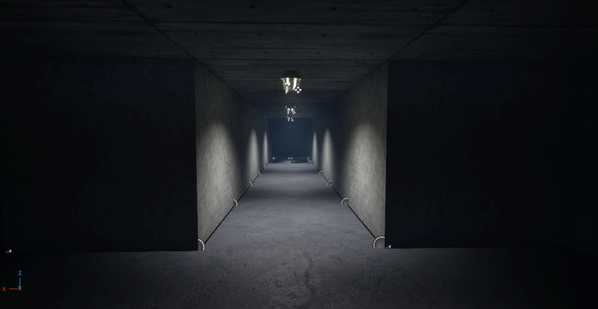

Basement
Native baseline, first observations and a small proposed production sequence.
Assets subtab → source files, module collections and missing references.
Art production · Environment first · 12 November 2026
A polished pharmaceutical company upstairs.
A neglected, almost dungeon-like workplace below.
Current focus / 01
Build on the existing modular kit. Make the route to the janitor's equipment shop readable, cohesive and unmistakably part of this company.
The first milestone is an agreed environment pass. Layout, material and lighting changes follow a native baseline and a clear review target.
Baseline captured · Art pass pending
Use the project tabs above to review and make decisions.
Native baseline, first observations and a small proposed production sequence.
Assets subtab → source files, module collections and missing references.
The owner's direction, grounded in what already exists. Editable as the project develops.
Materials → actual texture previews. Decisions → open choices and acceptance notes.
Verified connections, exact installed versions and the practical workflow for each editor.
Designer batch export works; interactive graph control remains unverified.
Authorized environment scope
Next review
Confirmed target: RTX 2060 + Ryzen 5 5600 · 1080p · medium-high · 60 FPS. Texture density: 256/512 px/m. In-game profiling remains pending.